《第二章》开发板硬件介绍¶
芯驿电子科技(上海)有限公司 基于XILINX Zynq UltraScale+ MPSoCs开发平台的开发板(型号:AXU3EG)2020款正式发布了,为了让您对此开发平台可以快速了解,我们编写了此用户手册。
这款MPSoCs开发平台采用核心板加扩展板的模式,方便用户对核心板的二次开发利用。核心板使用XILINX Zynq UltraScale+ EG芯片ZU3EG的解决方案,它采用Processing System(PS)+Programmable Logic(PL)技术将双核ARM Cortex-A53 和FPGA 可编程逻辑集成在一颗芯片上。另外核心板上PS端带有4片共4GB高速DDR4 SDRAM芯片,1片8GB的eMMC存储芯片和1片256Mb的QSPI FLASH芯片;核心板上PL端带有1片1GB的DDR4 SDRAM芯片 。
在底板设计上我们为用户扩展了丰富的外围接口,比如1个FMC LPC接口、1路SATA M.2接口、1路DP接口、1个USB3.0接口、1路千兆以太网接口、1路UART串口接口、1路SD卡接口、2个40针扩展接口、2路CAN总线接口,2路RS485接口等等。满足用户各种高速数据交换,数据存储,视频传输处理,深度学习,人工智能以及工业控制的要求,是一款”专业级“的ZYNQ开发平台。为高速数据传输和交换,数据处理的前期验证和后期应用提供了可能。相信这样的一款产品非常适合从事MPSoCs开发的学生、工程师等群体。
在这里,对这款AXU3EG MPSoCs开发平台进行简单的功能介绍。
开发板的整个结构,继承了我们一贯的核心板+扩展板的模式来设计的。核心板和扩展板之间使用高速板间连接器连接。
核心板主要由ZU3EG + 5个DDR4 + eMMC +1个 QSPI FLASH的最小系统构成。ZU3EG采用Xilinx公司的Zynq UltraScale+ MPSoCs EG系列的芯片,型号为XCZU3EG-1SFVC784I。ZU3EG芯片可分成处理器系统部分Processor System(PS)和可编程逻辑部分Programmable Logic(PL)。在ZU3EG芯片的PS端和PL端分别挂了4片和1片DDR4,每片DDR4容量高达1G字节,使得ARM系统和FPGA系统能独立处理和存储的数据的功能。PS端的8GB eMMC FLASH存储芯片和1片256Mb的QSPI FLASH用来静态存储MPSoCs的操作系统、文件系统及用户数据。
底板为核心板扩展了丰富的外围接口,其中包含1路M.2接口、1路DP接口、4路USB3.0接口、2路千兆以太网接口、2路UART串口接口、1路SD卡接口、2个40针扩展接口、2路CAN总线接口,2路RS485接口,1路MIPI接口和一些按键LED。
下图为整个开发系统的结构示意图:
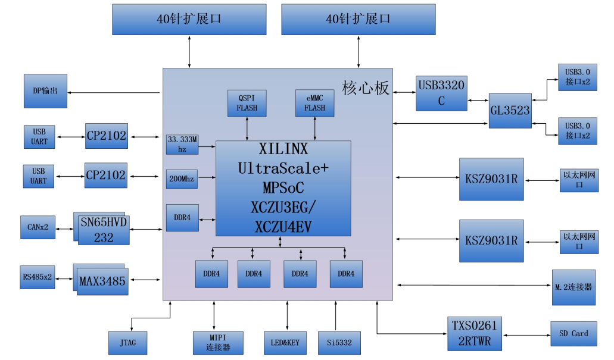通过这个示意图,我们可以看到,我们这个开发平台所能含有的接口和功能。
ZU3EG核心板 由ZU3EG+4GB DDR4(PS)+1GB DDR4(PL)+8GB eMMC FLASH + 256Mb QSPI FLASH组成,另外有2个晶振提供时钟,一个单端33.3333MHz晶振提供给PS系统,一个差分200MHz晶振提供给PL逻辑DDR参考时钟。
M.2接口 1路PCIEx1标准的M.2接口,用于连接M.2的SSD固态硬盘,通信速度高达6Gbps。
DP输出接口 1路标准的Display Port输出显示接口,用于视频图像的显示。最高支持4K@30Hz或者1080P@60Hz输出。
USB3.0接口 4路USB3.0 HOST接口,USB接口类型为TYPE A。用于连接外部的USB外设,比如连接鼠标,键盘,U盘等等。
千兆以太网接口 2路10/100M/1000M以太网RJ45接口,PS和PL各1路。用于和电脑或其它网络设备进行以太网数据交换。
USB Uart接口 2路Uart转USB接口,PS和PL各1路。用于和电脑通信,方便用户调试。串口芯片采用Silicon Labs CP2102GM的USB-UAR芯片, USB接口采用MINI USB接口。
Micro SD卡座 1路Micro SD卡座,用于存储操作系统镜像和文件系统。
40针扩展口 2个40针2.54mm间距的扩展口,可以外接黑金的各种模块(双目摄像头,TFT LCD屏,高速AD模块等等)。扩展口包含5V电源1路,3.3V电源2路,地3路,IO口34路。
CAN通信接口 2路CAN总线接口,选用TI公司的SN65HVD232芯片,接口采用4Pin的绿色接线端子。
485通信接口 2路485通信接口,选用MAXIM公司的MAX3485芯片。接口采用6Pin的绿色接线端子。
MIPI接口 2个LANE的MIPI摄像头输入接口,用于连接MIPI摄像头模块(AN5641)。
JTAG调试口 1个10针2.54mm标准的JTAG口,用于FPGA程序的下载和调试,用户可以通过XILINX下载器对ZU3EG系统进行调试和下载。
温湿度传感器 板载1片温湿度传感器芯片LM75,用于检测板子周围环境的温度和湿度。
EEPROM 1片IIC接口的EEPROM 24LC04;
RTC实时时钟 1路内置的RTC实时时钟;
LED灯 5个发光二极管LED, 核心板上2个,底板上3个。核心板上1个电源指示灯和1个DONE配置指示灯,。底板上有1个电源指示灯,2个用户指示灯。
按键 3个按键,1个复位按键, 2个用户按键。
2.1 ACU3EG核心板¶
2.1.1 简介¶
ACU3EG(核心板型号,下同)核心板,ZYNQ芯片是基于XILINX公司的Zynq UltraScale+ MPSoCs EG系列的XCZU3EG-1SFVC784I。
这款核心板使用了5片Micron的DDR4芯片MT40A512M16GE,其中PS端挂载4片DDR4,组成64位数据总线带宽和4GB的容量。PL端挂载1片,为16位的数据总线宽度和1GB的容量。PS端的DDR4 SDRAM的最高运行速度可达1200MHz(数据速率2400Mbps),PL端的DDR4 SDRAM的最高运行速度可达1066MHz(数据速率2132Mbps)。另外核心板上也集成了1片256MBit大小的QSPI FLASH和8GB大小的eMMC FLASH芯片,用于启动存储配置和系统文件。
为了和底板连接,这款核心板的4个板对板连接器扩展出了PS端的USB2.0接口,千兆以太网接口,SD卡接口及其它剩余的MIO口;也扩展出了4对PS MGT高速收发器接口;以及PL端的几乎所有IO口(HP I/O:96个,HD I/O:84个),XCZU3EG芯片到接口之间走线做了等长和差分处理,并且核心板尺寸仅为80*60(mm),对于二次开发来说,非常适合。
ACU3EG核心板正面图
2.1.2 ZYNQ芯片¶
开发板使用的是Xilinx公司的Zynq UltraScale+ MPSoCs EG系列的系列的芯片,型号为XCZU3EG-1SFVC784I。ZU3EG芯片的PS系统集成了4个ARM Cortex™-A53处理器,速度高达1.2Ghz,支持2级Cache; 另外还包含2个Cortex-R5处理器,速度高达500Mhz。
ZU3EG芯片支持32位或者64位的DDR4,LPDDR4,DDR3,DDR3L, LPDDR3存储芯片,在PS端带有丰富的高速接口如PCIE Gen2, USB3.0, SATA 3.1, DisplayPort;同时另外也支持USB2.0,千兆以太网,SD/SDIO,I2C,CAN,UART,GPIO等接口。PL端内部含有丰富的可编程逻辑单元,DSP和内部RAM。ZU3EG芯片的总体框图如图2-2-1所示
图2-2-1 ZYNQ ZU3EG芯片的总体框图 其中PS系统部分的主要参数如下:
ARM 四核Cortex™-A53处理器,速度高达1.2GHz,每个CPU 32KB 1级指令和数据缓存,1MB 2级缓存 2个CPU共享。
ARM 双核Cortex-R5处理器,速度高达500MHz,每个CPU 32KB 1级指令和数据缓存,及128K紧耦合内存。
外部存储接口,支持32/64bit DDR4/3/3L、LPDDR4/3接口。
静态存储接口,支持NAND, 2xQuad-SPI FLASH。
高速连接接口,支持PCIe Gen2 x4, 2xUSB3.0, Sata 3.1, DisplayPort, 4x Tri-mode Gigabit Ethernet。
普通连接接口:2xUSB2.0, 2x SD/SDIO, 2x UART, 2x CAN 2.0B, 2x I2C, 2x SPI, 4x 32b GPIO。
电源管理:支持Full/Low/PL/Battery四部分电源的划分。
加密算法:支持RSA, AES和SHA。
系统监控:10位1Mbps的AD采样,用于温度和电压的检测。
其中PL逻辑部分的主要参数如下:
逻辑单元Logic Cells:154K;
触发器(flip-flops) : 141K;
查找表LUTs : 71K;
Block RAM:9.4Mb;
时钟管理单元(CMTs): 3
乘法器18x25MACCs:360
XCZU3EG-1SFVC784I芯片的速度等级为-1,工业级,封装为SFVC784。
2.1.3 DDR4 DRAM¶
ACU3EG核心板上配有5片Micron(美光)的512MB的DDR4芯片,型号为MT40A512M16GE-083E, 其中PS端挂载4片DDR4,组成64位数据总线带宽和4GB的容量。PL端挂载1片,为16位的数据总线宽度和1GB的容量。PS端的DDR4 SDRAM的最高运行速度可达1200MHz(数据速率2400Mbps),4片DDR4存储系统直接连接到了PS的BANK504的存储器接口上。PL端的DDR4 SDRAM的最高运行速度可达1066MHz(数据速率2133Mbps),1片DDR4连接到了FPGA的BANK64的接口上。DDR4 SDRAM的具体配置如下表2-3-1所示。
位号 |
芯片类型 |
容量 |
厂家 |
|---|---|---|---|
U12,U14,U15,U16 |
MT40A512M16GE-083E |
512M x 16bit |
Micron |
表2-3-1 DDR4 SDRAM配置 DDR4的硬件设计需要严格考虑信号完整性,我们在电路设计和PCB设计的时候已经充分考虑了匹配电阻/终端电阻,走线阻抗控制,走线等长控制,保证DDR4的高速稳定的工作。
PS端的DDR4的硬件连接方式如图2-3-1所示:
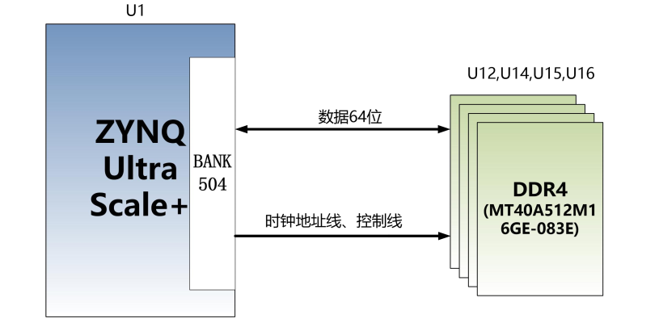图2-3-1 PS端DDR4 DRAM原理图部分
PL端的DDR4 DRAM的硬件连接方式如图2-3-2所示:
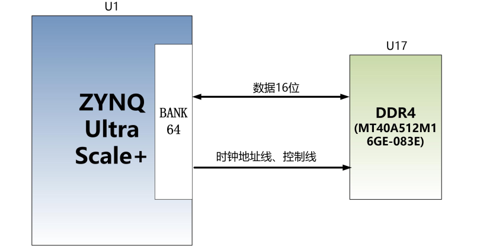图2-3-2 PL端DDR4 DRAM原理图部分
PS端DDR4 SDRAM引脚分配¶
信号名称 |
引脚名 |
引脚号 |
|---|---|---|
PS_DDR4_DQS0_P |
PS_DDR_DQS_P0_504 |
AF21 |
PS_DDR4_DQS0_N |
PS_DDR_DQS_N0_504 |
AG21 |
PS_DDR4_DQS1_P |
PS_DDR_DQS_P1_504 |
AF23 |
PS_DDR4_DQS1_N |
PS_DDR_DQS_N1_504 |
AG23 |
PS_DDR4_DQS2_P |
PS_DDR_DQS_P2_504 |
AF25 |
PS_DDR4_DQS2_N |
PS_DDR_DQS_N2_504 |
AF26 |
PS_DDR4_DQS3_P |
PS_DDR_DQS_P3_504 |
AE27 |
PS_DDR4_DQS3_N |
PS_DDR_DQS_N3_504 |
AF27 |
PS_DDR4_DQS4_P |
PS_DDR_DQS_P4_504 |
N23 |
PS_DDR4_DQS4_N |
PS_DDR_DQS_N4_504 |
M23 |
PS_DDR4_DQS5_P |
PS_DDR_DQS_P5_504 |
L23 |
PS_DDR4_DQS5_N |
PS_DDR_DQS_N5_504 |
K23 |
PS_DDR4_DQS6_P |
PS_DDR_DQS_P6_504 |
N26 |
PS_DDR4_DQS6_N |
PS_DDR_DQS_N6_504 |
N27 |
PS_DDR4_DQS7_P |
PS_DDR_DQS_P7_504 |
J26 |
PS_DDR4_DQS7_N |
PS_DDR_DQS_N7_504 |
J27 |
PS_DDR4_DQ0 |
PS_DDR_DQ0_504 |
AD21 |
PS_DDR4_DQ1 |
PS_DDR_DQ1_504 |
AE20 |
PS_DDR4_DQ2 |
PS_DDR_DQ2_504 |
AD20 |
PS_DDR4_DQ3 |
PS_DDR_DQ3_504 |
AF20 |
PS_DDR4_DQ4 |
PS_DDR_DQ4_504 |
AH21 |
PS_DDR4_DQ5 |
PS_DDR_DQ5_504 |
AH20 |
PS_DDR4_DQ6 |
PS_DDR_DQ6_504 |
AH19 |
PS_DDR4_DQ7 |
PS_DDR_DQ7_504 |
AG19 |
PS_DDR4_DQ8 |
PS_DDR_DQ8_504 |
AF22 |
PS_DDR4_DQ9 |
PS_DDR_DQ9_504 |
AH22 |
PS_DDR4_DQ10 |
PS_DDR_DQ10_504 |
AE22 |
PS_DDR4_DQ11 |
PS_DDR_DQ11_504 |
AD22 |
PS_DDR4_DQ12 |
PS_DDR_DQ12_504 |
AH23 |
PS_DDR4_DQ13 |
PS_DDR_DQ13_504 |
AH24 |
PS_DDR4_DQ14 |
PS_DDR_DQ14_504 |
AE24 |
PS_DDR4_DQ15 |
PS_DDR_DQ15_504 |
AG24 |
PS_DDR4_DQ16 |
PS_DDR_DQ16_504 |
AC26 |
PS_DDR4_DQ17 |
PS_DDR_DQ17_504 |
AD26 |
PS_DDR4_DQ18 |
PS_DDR_DQ18_504 |
AD25 |
PS_DDR4_DQ19 |
PS_DDR_DQ19_504 |
AD24 |
PS_DDR4_DQ20 |
PS_DDR_DQ20_504 |
AG26 |
PS_DDR4_DQ21 |
PS_DDR_DQ21_504 |
AH25 |
PS_DDR4_DQ22 |
PS_DDR_DQ22_504 |
AH26 |
PS_DDR4_DQ23 |
PS_DDR_DQ23_504 |
AG25 |
PS_DDR4_DQ24 |
PS_DDR_DQ24_504 |
AH27 |
PS_DDR4_DQ25 |
PS_DDR_DQ25_504 |
AH28 |
PS_DDR4_DQ26 |
PS_DDR_DQ26_504 |
AF28 |
PS_DDR4_DQ27 |
PS_DDR_DQ27_504 |
AG28 |
PS_DDR4_DQ28 |
PS_DDR_DQ28_504 |
AC27 |
PS_DDR4_DQ29 |
PS_DDR_DQ29_504 |
AD27 |
PS_DDR4_DQ30 |
PS_DDR_DQ30_504 |
AD28 |
PS_DDR4_DQ31 |
PS_DDR_DQ31_504 |
AC28 |
PS_DDR4_DQ32 |
PS_DDR_DQ32_504 |
T22 |
PS_DDR4_DQ33 |
PS_DDR_DQ33_504 |
R22 |
PS_DDR4_DQ34 |
PS_DDR_DQ34_504 |
P22 |
PS_DDR4_DQ35 |
PS_DDR_DQ35_504 |
N22 |
PS_DDR4_DQ36 |
PS_DDR_DQ36_504 |
T23 |
PS_DDR4_DQ37 |
PS_DDR_DQ37_504 |
P24 |
PS_DDR4_DQ38 |
PS_DDR_DQ38_504 |
R24 |
PS_DDR4_DQ39 |
PS_DDR_DQ39_504 |
N24 |
PS_DDR4_DQ40 |
PS_DDR_DQ40_504 |
H24 |
PS_DDR4_DQ41 |
PS_DDR_DQ41_504 |
J24 |
PS_DDR4_DQ42 |
PS_DDR_DQ42_504 |
M24 |
PS_DDR4_DQ43 |
PS_DDR_DQ43_504 |
K24 |
PS_DDR4_DQ44 |
PS_DDR_DQ44_504 |
J22 |
PS_DDR4_DQ45 |
PS_DDR_DQ45_504 |
H22 |
PS_DDR4_DQ46 |
PS_DDR_DQ46_504 |
K22 |
PS_DDR4_DQ47 |
PS_DDR_DQ47_504 |
L22 |
PS_DDR4_DQ48 |
PS_DDR_DQ48_504 |
M25 |
PS_DDR4_DQ49 |
PS_DDR_DQ49_504 |
M26 |
PS_DDR4_DQ50 |
PS_DDR_DQ50_504 |
L25 |
PS_DDR4_DQ51 |
PS_DDR_DQ51_504 |
L26 |
PS_DDR4_DQ52 |
PS_DDR_DQ52_504 |
K28 |
PS_DDR4_DQ53 |
PS_DDR_DQ53_504 |
L28 |
PS_DDR4_DQ54 |
PS_DDR_DQ54_504 |
M28 |
PS_DDR4_DQ55 |
PS_DDR_DQ55_504 |
N28 |
PS_DDR4_DQ56 |
PS_DDR_DQ56_504 |
J28 |
PS_DDR4_DQ57 |
PS_DDR_DQ57_504 |
K27 |
PS_DDR4_DQ58 |
PS_DDR_DQ58_504 |
H28 |
PS_DDR4_DQ59 |
PS_DDR_DQ59_504 |
H27 |
PS_DDR4_DQ60 |
PS_DDR_DQ60_504 |
G26 |
PS_DDR4_DQ61 |
PS_DDR_DQ61_504 |
G25 |
PS_DDR4_DQ62 |
PS_DDR_DQ62_504 |
K25 |
PS_DDR4_DQ63 |
PS_DDR_DQ63_504 |
J25 |
PS_DDR4_DM0 |
PS_DDR_DM0_504 |
AG20 |
PS_DDR4_DM1 |
PS_DDR_DM1_504 |
AE23 |
PS_DDR4_DM2 |
PS_DDR_DM2_504 |
AE25 |
PS_DDR4_DM3 |
PS_DDR_DM3_504 |
AE28 |
PS_DDR4_DM4 |
PS_DDR_DM4_504 |
R23 |
PS_DDR4_DM5 |
PS_DDR_DM5_504 |
H23 |
PS_DDR4_DM6 |
PS_DDR_DM6_504 |
L27 |
PS_DDR4_DM7 |
PS_DDR_DM7_504 |
H26 |
PS_DDR4_A0 |
PS_DDR_A0_504 |
W28 |
PS_DDR4_A1 |
PS_DDR_A1_504 |
Y28 |
PS_DDR4_A2 |
PS_DDR_A2_504 |
AB28 |
PS_DDR4_A3 |
PS_DDR_A3_504 |
AA28 |
PS_DDR4_A4 |
PS_DDR_A4_504 |
Y27 |
PS_DDR4_A5 |
PS_DDR_A5_504 |
AA27 |
PS_DDR4_A6 |
PS_DDR_A6_504 |
Y22 |
PS_DDR4_A7 |
PS_DDR_A7_504 |
AA23 |
PS_DDR4_A8 |
PS_DDR_A8_504 |
AA22 |
PS_DDR4_A9 |
PS_DDR_A9_504 |
AB23 |
PS_DDR4_A10 |
PS_DDR_A10_504 |
AA25 |
PS_DDR4_A11 |
PS_DDR_A11_504 |
AA26 |
PS_DDR4_A12 |
PS_DDR_A12_504 |
AB25 |
PS_DDR4_A13 |
PS_DDR_A13_504 |
AB26 |
PS_DDR4_WE_B |
PS_DDR_A14_504 |
AB24 |
PS_DDR4_CAS_B |
PS_DDR_A15_504 |
AC24 |
PS_DDR4_RAS_B |
PS_DDR_A16_504 |
AC23 |
PS_DDR4_ACT_B |
PS_DDR_ACT_N_504 |
Y23 |
PS_DDR4_ALERT_B |
PS_DDR_ALERT_N_504 |
U25 |
PS_DDR4_BA0 |
PS_DDR_BA0_504 |
V23 |
PS_DDR4_BA1 |
PS_DDR_BA1_504 |
W22 |
PS_DDR4_BG0 |
PS_DDR_BG0_504 |
W24 |
PS_DDR4_CS0_B |
PS_DDR_CS_N0_504 |
W27 |
PS_DDR4_ODT0 |
PS_DDR_ODT0_504 |
U28 |
PS_DDR4_PARITY |
PS_DDR_PARITY_504 |
V24 |
PS_DDR4_RESET_B |
PS_DDR_RST_N_504 |
U23 |
PS_DDR4_CLK0_P |
PS_DDR_CK0_P_504 |
W25 |
PS_DDR4_CLK0_N |
PS_DDR_CK0_N_504 |
W26 |
PS_DDR4_CKE0 |
PS_DDR_CKE0_504 |
V28 |
PL端DDR4 SDRAM引脚分配¶
信号名称 |
引脚名 |
引脚号 |
|---|---|---|
PL_DDR4_DQS0_P |
IO_L22P_T3U_N6_DBC_AD0P_64 |
AE2 |
PL_DDR4_DQS0_N |
IO_L22N_T3U_N7_DBC_AD0N_64 |
AF2 |
PL_DDR4_DQS1_P |
IO_L16P_T2U_N6_QBC_AD3P_64 |
AD2 |
PL_DDR4_DQS1_N |
IO_L16N_T2U_N7_QBC_AD3N_64 |
AD1 |
PL_DDR4_DQ0 |
IO_L24N_T3U_N11_64 |
AG1 |
PL_DDR4_DQ1 |
IO_L24P_T3U_N10_64 |
AF1 |
PL_DDR4_DQ2 |
IO_L23N_T3U_N9_64 |
AH1 |
PL_DDR4_DQ3 |
IO_L23P_T3U_N8_64 |
AH2 |
PL_DDR4_DQ4 |
IO_L21N_T3L_N5_AD8N_64 |
AF3 |
PL_DDR4_DQ5 |
IO_L21P_T3L_N4_AD8P_64 |
AE3 |
PL_DDR4_DQ6 |
IO_L20N_T3L_N3_AD1N_64 |
AH3 |
PL_DDR4_DQ7 |
IO_L20P_T3L_N2_AD1P_64 |
AG3 |
PL_DDR4_DQ8 |
IO_L18N_T2U_N11_AD2N_64 |
AC1 |
PL_DDR4_DQ9 |
IO_L18P_T2U_N10_AD2P_64 |
AB1 |
PL_DDR4_DQ10 |
IO_L17N_T2U_N9_AD10N_64 |
AC2 |
PL_DDR4_DQ11 |
IO_L17P_T2U_N8_AD10P_64 |
AB2 |
PL_DDR4_DQ12 |
IO_L15N_T2L_N5_AD11N_64 |
AB3 |
PL_DDR4_DQ13 |
IO_L15P_T2L_N4_AD11P_64 |
AB4 |
PL_DDR4_DQ14 |
IO_L14N_T2L_N3_GC_64 |
AC3 |
PL_DDR4_DQ15 |
IO_L14P_T2L_N2_GC_64 |
AC4 |
PL_DDR4_DM0 |
IO_L19P_T3L_N0_DBC_AD9P_64 |
AG4 |
PL_DDR4_DM1 |
IO_L13P_T2L_N0_GC_QBC_64 |
AD5 |
PL_DDR4_A0 |
IO_L8N_T1L_N3_AD5N_64 |
AG8 |
PL_DDR4_A1 |
IO_L3P_T0L_N4_AD15P_64 |
AB8 |
PL_DDR4_A2 |
IO_L8P_T1L_N2_AD5P_64 |
AF8 |
PL_DDR4_A3 |
IO_L3N_T0L_N5_AD15N_64 |
AC8 |
PL_DDR4_A4 |
IO_L11P_T1U_N8_GC_64 |
AF7 |
PL_DDR4_A5 |
IO_L4P_T0U_N6_DBC_AD7P_64 |
AD7 |
PL_DDR4_A6 |
IO_L9N_T1L_N5_AD12N_64 |
AH7 |
PL_DDR4_A7 |
IO_L2P_T0L_N2_64 |
AE9 |
PL_DDR4_A8 |
IO_L9P_T1L_N4_AD12P_64 |
AH8 |
PL_DDR4_A9 |
IO_L1P_T0L_N0_DBC_64 |
AC9 |
PL_DDR4_A10 |
IO_L4N_T0U_N7_DBC_AD7N_64 |
AE7 |
PL_DDR4_A11 |
IO_L7N_T1L_N1_QBC_AD13N_64 |
AH9 |
PL_DDR4_A12 |
IO_L6N_T0U_N11_AD6N_64 |
AC6 |
PL_DDR4_A13 |
IO_L1N_T0L_N1_DBC_64 |
AD9 |
PL_DDR4_BA0 |
IO_T1U_N12_64 |
AH6 |
PL_DDR4_BA1 |
IO_L5N_T0U_N9_AD14N_64 |
AC7 |
PL_DDR4_RAS_B |
IO_T2U_N12_64 |
AB5 |
PL_DDR4_CAS_B |
IO_L5P_T0U_N8_AD14P_64 |
AB7 |
PL_DDR4_WE_B |
IO_L11N_T1U_N9_GC_64 |
AF6 |
PL_DDR4_ACT_B |
IO_L13N_T2L_N1_GC_QBC_64 |
AD4 |
PL_DDR4_CS_B |
IO_L6P_T0U_N10_AD6P_64 |
AB6 |
PL_DDR4_BG0 |
IO_L2N_T0L_N3_64 |
AE8 |
PL_DDR4_RST |
IO_L7P_T1L_N0_QBC_AD13P_64 |
AG9 |
PL_DDR4_CLK_N |
IO_L10N_T1U_N7_QBC_AD4N_64 |
AG5 |
PL_DDR4_CLK_P |
IO_L10P_T1U_N6_QBC_AD4P_64 |
AG6 |
PL_DDR4_CKE |
IO_T3U_N12_64 |
AE4 |
PL_DDR4_OTD |
IO_L19N_T3L_N1_DBC_AD9N_64 |
AH4 |
2.1.4 QSPI Flash¶
ACU3EG核心板配有1片256MBit大小的Quad-SPI FLASH芯片组成8位带宽数据总线,FLASH型号为MT25QU256ABA1EW9,它使用1.8V CMOS电压标准。由于QSPI FLASH的非易失特性,在使用中, 它可以作为系统的启动设备来存储系统的启动镜像。这些镜像主要包括FPGA的bit文件、ARM的应用程序代码以及其它的用户数据文件。QSPI FLASH的具体型号和相关参数见表2-4-1。
位号 |
芯片类型 |
容量 |
厂家 |
|---|---|---|---|
U5 |
MT25QU256ABA1EW9 |
256M bit |
Winbond |
表2-4-1 QSPI Flash的型号和参数
QSPI FLASH连接到ZYNQ芯片的PS部分BANK500的GPIO口上,在系统设计中需要配置这些PS端的GPIO口功能为QSPI FLASH接口。为图4-1为QSPI Flash在原理图中的部分。
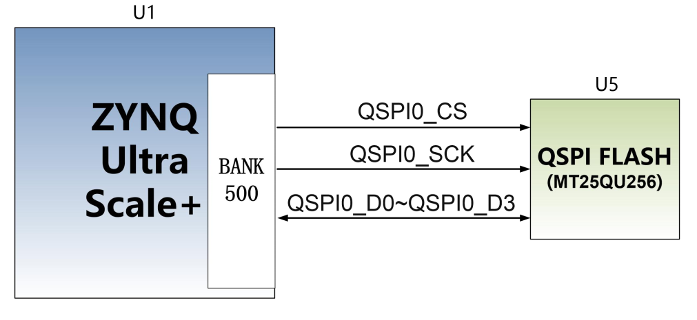图2-4-1 QSPI Flash连接示意图
QSPI FLASH配置芯片引脚分配¶
信号名称 |
引脚名 |
引脚号 |
|---|---|---|
MIO0_QSPI0_SCLK |
PS_MIO0_500 |
AG15 |
MIO1_QSPI0_IO1 |
PS_MIO1_500 |
AG16 |
MIO2_QSPI0_IO2 |
PS_MIO2_500 |
AF15 |
MIO3_QSPI0_IO3 |
PS_MIO3_500 |
AH15 |
MIO4_QSPI0_IO0 |
PS_MIO4_500 |
AH16 |
MIO5_QSPI0_SS_B |
PS_MIO5_500 |
AD16 |
2.1.5 eMMC Flash¶
ACU3EG核心板配有一片大容量的8GB大小的eMMC FLASH芯片,型号为MTFC8GAKAJCN-4M,它支持JEDEC e-MMC V5.0标准的HS-MMC接口,电平支持1.8V或者3.3V。eMMC FLASH和ZYNQ连接的数据宽度为8bit。由于eMMC FLASH的大容量和非易失特性,在ZYNQ系统使用中,它可以作为系统大容量的存储设备,比如存储ARM的应用程序、系统文件以及其它的用户数据文件。eMMC FLASH的具体型号和相关参数见表2-5-1。
位号 |
芯片类型 |
容量 |
厂家 |
|---|---|---|---|
U19 |
MTFC8GAKAJCN-4M |
8G Byte |
Micron |
表2-5-1 eMMC Flash的型号和参数
eMMC FLASH连接到ZYNQ UltraScale+的PS部分BANK500的GPIO口上,在系统设计中需要配置这些PS端的GPIO口功能为EMMC接口。为图2-5-1为eMMC Flash在原理图中的部分。
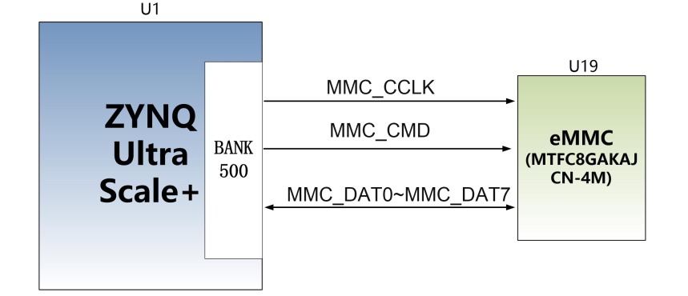图2-5-1 eMMC Flash连接示意图
eMMC FLASH配置芯片引脚分配¶
信号名称 |
引脚名 |
引脚号 |
|---|---|---|
MMC_DAT0 |
PS_MIO13_500 |
AH18 |
MMC_DAT1 |
PS_MIO14_500 |
AG18 |
MMC_DAT2 |
PS_MIO15_500 |
AE18 |
MMC_DAT3 |
PS_MIO16_500 |
AF18 |
MMC_DAT4 |
PS_MIO17_500 |
AC18 |
MMC_DAT5 |
PS_MIO18_500 |
AC19 |
MMC_DAT6 |
PS_MIO19_500 |
AE19 |
MMC_DAT7 |
PS_MIO20_500 |
AD19 |
MMC_CMD |
PS_MIO21_500 |
AC21 |
MMC_CCLK |
PS_MIO22_500 |
AB20 |
MMC_RSTN |
PS_MIO23_500 |
AB18 |
2.1.6 时钟配置¶
核心板上分别为PS系统, PL逻辑部分提供了参考时钟和RTC实时时钟,使PS系统和PL逻辑可以单独工作。时钟电路设计的示意图如下图2-6-1所示:
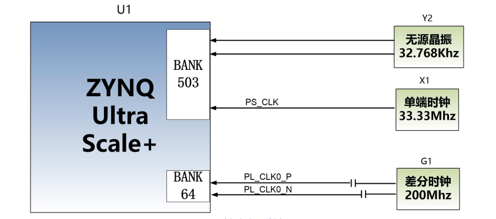图 2-6-1 核心板时钟源
PS系统RTC实时时钟 核心板上的无源晶体Y2为PS系统的提供32.768KHz的实时时钟源。晶体连接到ZYNQ芯片的BANK503的PS_PADI_503和PS_PADO_503的管脚上。其原理图如图2-6-2所示:
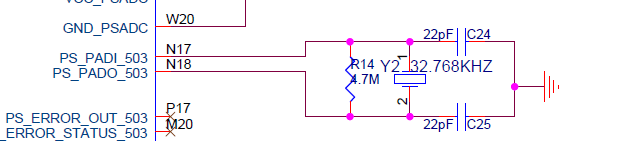图2-6-2 RTC的无源晶振
RTC时钟引脚分配¶
信号名称 |
引脚 |
|---|---|
PS_PADI_503 |
N17 |
PS_PADO_503 |
N18 |
PS系统时钟源 核心板上的X1晶振为PS部分提供33.333MHz的时钟输入。时钟的输入连接到ZYNQ芯片的BANK503的PS_REF_CLK_503的管脚上。其原理图如图2-6-3所示:
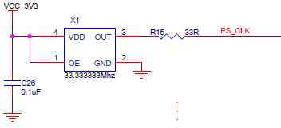图2-6-3 PS部分的有源晶振
PS时钟引脚分配¶
信号名称 |
引脚 |
|---|---|
PS_CLK |
R16 |
PL系统时钟源 板上提供了一个差分200MHz的PL系统时钟源,用于DDR4控制器的参考时钟。晶振输出连接到PL BANK64的全局时钟(MRCC),这个全局时钟可以用来驱动FPGA内的DDR4控制器和用户逻辑电路。该时钟源的原理图如图2-6-4所示
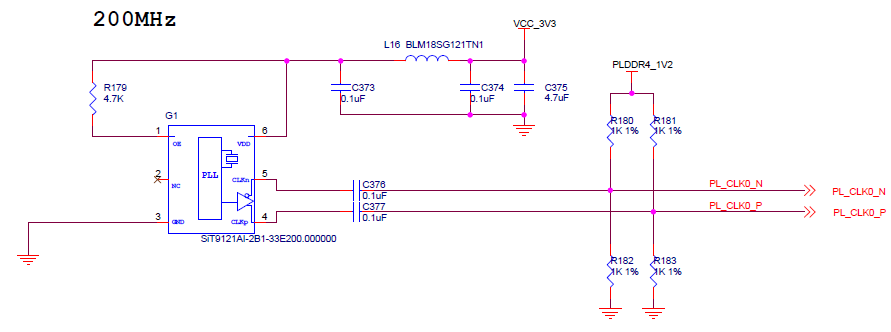图 2-6-4 PL系统时钟源
PL时钟引脚分配¶
信号名称 |
引脚 |
|---|---|
PL_CLK0_P |
AE5 |
PL_CLK0_N |
AF5 |
2.1.7 LED灯¶
ACU3EG核心板上有1个红色电源指示灯(PWR),1个是配置LED灯(DONE)。当核心板供电后,电源指示灯会亮起;当FPGA 配置程序后,配置LED灯会亮起。LED灯硬件连接的示意图如图2-7-1所示:
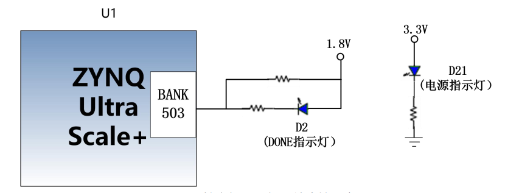图2-7-1 核心板LED灯硬件连接示意图
2.1.8 电源¶
ACU3EG核心板供电电压为+12V,通过连接底板给核心板供电。核心板上通过一个PMIC芯片TPS6508641产生XCZU3EG芯片所需要的所有电源,TPS6508641电源设计请参考电源芯片手册,设计框图如下:
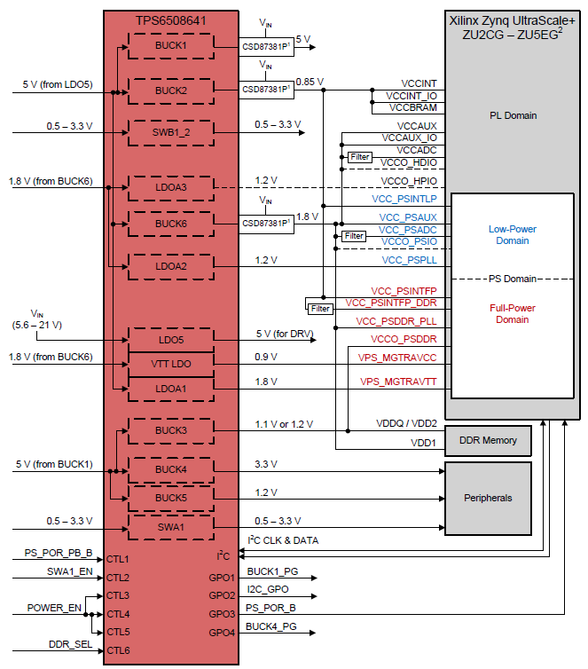另外XCZU3EG芯片的BANK65,BANK66的VCCIO电源是由底板提供,方便用户修改,但供电最高不能超过1.8V。
2.1.9 结构图¶
正面图(Top View)
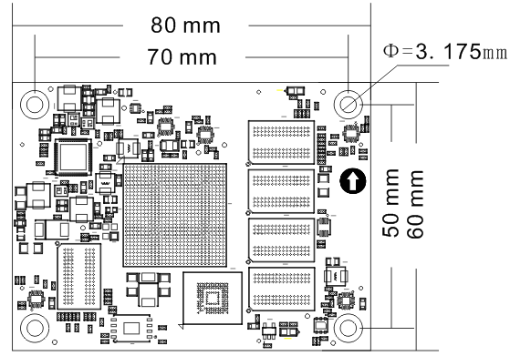2.1.10 连接器管脚定义¶
核心板一共扩展出4个高速扩展口,使用4个120Pin的板间连接器(J29~J32)和底板连接,连接器使用松下的AXK5A2137YG,对应底板的连接器型号为AXK6A2337YG。其中J29连接BANK65,BANK66的IO,J30连接BANK25,BANK26,BANK66的IO和BANK505 MGT的收发器信号, J31连接BANK24,BANK44的IO,J32连接PS的MIO,VCCO_65,VCCO_66和+12V电源。
其中BANK43~46的IO的电平标准为3.3V,BANK65,66的电平标准由底板的VCCO_65,VCCO_66电源决定,但不能超过+1.8V;MIO的电平标准也为1.8V。
J29连接器的引脚分配¶
J29管脚 |
信号名称 |
引脚号 |
J29管脚 |
信号名称 |
引脚号 |
|---|---|---|---|---|---|
1 |
B65_L2_N |
V9 |
2 |
B65_L22_P |
K8 |
3 |
B65_L2_P |
U9 |
4 |
B65_L22_N |
K7 |
5 |
GND |
— |
6 |
GND |
— |
7 |
B65_L4_N |
T8 |
8 |
B65_L20_P |
J6 |
9 |
B65_L4_P |
R8 |
10 |
B65_L20_N |
H6 |
11 |
GND |
— |
12 |
GND |
— |
13 |
B65_L1_N |
Y8 |
14 |
B65_L6_N |
T6 |
15 |
B65_L1_P |
W8 |
16 |
B65_L6_P |
R6 |
17 |
GND |
— |
18 |
GND |
— |
19 |
B65_L7_P |
L1 |
20 |
B65_L17_P |
N9 |
21 |
B65_L7_N |
K1 |
22 |
B65_L17_N |
N8 |
23 |
GND |
— |
24 |
GND |
— |
25 |
B65_L15_P |
N7 |
26 |
B65_L9_P |
K2 |
27 |
B65_L15_N |
N6 |
28 |
B65_L9_N |
J2 |
29 |
GND |
— |
30 |
GND |
— |
31 |
B65_L16_P |
P7 |
32 |
B65_L3_N |
V8 |
33 |
B65_L16_N |
P6 |
34 |
B65_L3_P |
U8 |
35 |
GND |
— |
36 |
GND |
— |
37 |
B65_L14_P |
M6 |
38 |
B65_L19_P |
J5 |
39 |
B65_L14_N |
L5 |
40 |
B65_L19_N |
J4 |
41 |
GND |
— |
42 |
GND |
— |
43 |
B65_L5_N |
T7 |
44 |
B65_L18_P |
M8 |
45 |
B65_L5_P |
R7 |
46 |
B65_L18_N |
L8 |
47 |
GND |
— |
48 |
GND |
— |
49 |
B65_L11_N |
K3 |
50 |
B65_L8_P |
J1 |
51 |
B65_L11_P |
K4 |
52 |
B65_L8_N |
H1 |
53 |
GND |
— |
54 |
GND |
— |
55 |
B65_L10_N |
H3 |
56 |
B65_L24_N |
H8 |
57 |
B65_L10_P |
H4 |
58 |
B65_L24_P |
H9 |
59 |
GND |
— |
60 |
GND |
— |
61 |
B66_L3_P |
F2 |
62 |
B65_L12_P |
L3 |
63 |
B66_L3_N |
E2 |
64 |
B65_L12_N |
L2 |
65 |
GND |
— |
66 |
GND |
— |
67 |
B66_L1_P |
G1 |
68 |
B65_L13_N |
L6 |
69 |
B66_L1_N |
F1 |
70 |
B65_L13_P |
L7 |
71 |
GND |
— |
72 |
GND |
— |
73 |
B66_L6_P |
G5 |
74 |
B65_L21_P |
J7 |
75 |
B66_L6_N |
F5 |
76 |
B65_L21_N |
H7 |
77 |
GND |
— |
78 |
GND |
— |
79 |
B66_L16_P |
G8 |
80 |
B65_L23_P |
K9 |
81 |
B66_L16_N |
F7 |
82 |
B65_L23_N |
J9 |
83 |
GND |
— |
84 |
GND |
— |
85 |
B66_L15_P |
G6 |
86 |
B66_L5_N |
E3 |
87 |
B66_L15_N |
F6 |
88 |
B66_L5_P |
|
89 |
GND |
— |
90 |
GND |
— |
91 |
B66_L4_P |
G3 |
92 |
B66_L2_P |
E1 |
93 |
B66_L4_N |
F3 |
94 |
B66_L2_N |
D1 |
95 |
GND |
— |
96 |
GND |
— |
97 |
B66_L11_P |
D4 |
98 |
B66_L20_P |
C6 |
99 |
B66_L11_N |
C4 |
100 |
B66_L20_N |
B6 |
101 |
GND |
— |
102 |
GND |
— |
103 |
B66_L12_P |
C3 |
104 |
B66_L7_P |
C1 |
105 |
B66_L12_N |
C2 |
106 |
B66_L7_N |
B1 |
107 |
GND |
— |
108 |
GND |
— |
109 |
B66_L13_P |
D7 |
110 |
B66_L10_P |
B4 |
111 |
B66_L13_N |
D6 |
112 |
B66_L10_N |
A4 |
113 |
GND |
— |
114 |
GND |
— |
115 |
B66_L8_P |
A2 |
116 |
B66_L9_P |
B3 |
117 |
B66_L8_N |
A1 |
118 |
B66_L9_N |
A3 |
119 |
GND |
— |
120 |
GND |
— |
J30连接器的引脚分配¶
J30管脚 |
信号名称 |
引脚号 |
J30管脚 |
信号名称 |
引脚号 |
|---|---|---|---|---|---|
1 |
B66_L14_P |
E5 |
2 |
FPGA_TDI |
R18 |
3 |
B66_L14_N |
D5 |
4 |
FPGA_TCK |
R19 |
5 |
GND |
— |
6 |
GND |
— |
7 |
B66_L22_P |
C8 |
8 |
FPGA_TDO |
T21 |
9 |
B66_L22_N |
B8 |
10 |
FPGA_TMS |
N21 |
11 |
GND |
— |
12 |
GND |
— |
13 |
B66_L19_N |
A5 |
14 |
B66_L21_N |
A6 |
15 |
B66_L19_P |
B5 |
16 |
B66_L21_P |
A7 |
17 |
GND |
— |
18 |
GND |
— |
19 |
B66_L24_P |
C9 |
20 |
B66_L17_P |
F8 |
21 |
B66_L24_N |
B9 |
22 |
B66_L17_N |
E8 |
23 |
GND |
— |
24 |
GND |
— |
25 |
B66_L23_N |
A8 |
26 |
B25_L9_P |
C11 |
27 |
B66_L23_P |
A9 |
28 |
B25_L9_N |
B10 |
29 |
GND |
— |
30 |
GND |
— |
31 |
B25_L5_N |
F10 |
32 |
B25_L10_P |
B11 |
33 |
B25_L5_P |
G11 |
34 |
B25_L10_N |
A10 |
35 |
GND |
— |
36 |
GND |
— |
37 |
B66_L18_N |
D9 |
38 |
B25_L12_P |
D12 |
39 |
B66_L18_P |
E9 |
40 |
B25_L12_N |
C12 |
41 |
GND |
— |
42 |
GND |
— |
43 |
B25_L4_N |
H12 |
44 |
B25_L11_P |
A12 |
45 |
B25_L4_P |
J12 |
46 |
B25_L11_N |
A11 |
47 |
GND |
— |
48 |
GND |
— |
49 |
B26_L11_P |
K14 |
50 |
B25_L6_N |
F11 |
51 |
B26_L11_N |
J14 |
52 |
B25_L6_P |
F12 |
53 |
GND |
— |
54 |
GND |
— |
55 |
B26_L10_N |
H13 |
56 |
B26_L6_N |
E13 |
57 |
B26_L10_P |
H14 |
58 |
B26_L6_P |
E14 |
59 |
GND |
— |
60 |
GND |
— |
61 |
B26_L7_N |
F13 |
62 |
B26_L3_N |
A13 |
63 |
B26_L7_P |
G13 |
64 |
B26_L3_P |
B13 |
65 |
GND |
— |
66 |
GND |
— |
67 |
B26_L9_N |
G14 |
68 |
B26_L2_N |
A14 |
69 |
B26_L9_P |
G15 |
70 |
B26_L2_P |
B14 |
71 |
GND |
— |
72 |
GND |
— |
73 |
B26_L5_N |
D14 |
74 |
B26_L4_N |
C13 |
79 |
B26_L5_P |
D15 |
76 |
B26_L4_P |
C14 |
77 |
GND |
— |
78 |
GND |
— |
79 |
B26_L1_P |
B15 |
80 |
B26_L12_P |
L14 |
81 |
B26_L1_N |
A15 |
82 |
B26_L12_N |
L13 |
83 |
GND |
— |
84 |
GND |
— |
85 |
505_CLK2_P |
C21 |
86 |
505_CLK1_P |
E21 |
87 |
505_CLK2_P |
C22 |
88 |
505_CLK1_P |
E22 |
89 |
GND |
— |
90 |
GND |
— |
91 |
505_CLK0_P |
F23 |
92 |
505_CLK3_P |
A21 |
93 |
505_CLK0_N |
F24 |
94 |
505_CLK3_N |
A22 |
95 |
GND |
— |
96 |
GND |
— |
97 |
505_TX3_P |
B23 |
98 |
505_TX1_P |
D23 |
99 |
505_TX3_N |
B24 |
100 |
505_TX1_N |
D24 |
101 |
GND |
— |
102 |
GND |
— |
103 |
505_RX3_P |
A25 |
104 |
505_TX0_P |
E25 |
105 |
505_RX3_N |
A26 |
106 |
505_TX0_N |
E26 |
107 |
GND |
— |
108 |
GND |
— |
109 |
505_TX2_P |
C25 |
110 |
505_RX1_P |
D27 |
111 |
505_TX2_N |
C26 |
112 |
505_RX1_N |
D28 |
113 |
GND |
— |
114 |
GND |
— |
115 |
505_RX2_P |
B27 |
116 |
505_RX0_P |
F27 |
117 |
505_RX2_N |
B28 |
118 |
505_RX0_N |
F28 |
119 |
GND |
— |
120 |
GND |
— |
J31连接器的引脚分配¶
J31管脚 |
信号名称 |
引脚号 |
J31管脚 |
信号名称 |
引脚号 |
|---|---|---|---|---|---|
1 |
B24_L10_P |
Y14 |
2 |
B24_L7_P |
AA13 |
3 |
B24_L10_N |
Y13 |
4 |
B24_L7_N |
AB13 |
5 |
GND |
— |
6 |
GND |
— |
7 |
B24_L6_P |
AC14 |
8 |
B44_L6_P |
AC12 |
9 |
B24_L6_N |
AC13 |
10 |
B44_L6_N |
AD12 |
11 |
GND |
— |
12 |
GND |
— |
13 |
B24_L5_P |
AD15 |
14 |
B44_L7_P |
AD11 |
15 |
B24_L5_N |
AD14 |
16 |
B44_L7_N |
AD10 |
17 |
GND |
— |
18 |
GND |
— |
19 |
B24_L1_P |
AE15 |
20 |
B44_L8_N |
AC11 |
21 |
B24_L1_N |
AE14 |
22 |
B44_L8_P |
AB11 |
23 |
GND |
— |
24 |
GND |
— |
25 |
B24_L12_P |
Y12 |
26 |
B24_L2_P |
AG14 |
27 |
B24_L12_N |
AA12 |
28 |
B24_L2_N |
AH14 |
29 |
GND |
— |
30 |
GND |
— |
31 |
B24_L3_P |
AG13 |
32 |
— |
— |
33 |
B24_L3_N |
AH13 |
34 |
— |
— |
35 |
GND |
— |
36 |
GND |
— |
37 |
B44_L12_N |
AB9 |
38 |
B44_L9_P |
AA11 |
39 |
B44_L12_P |
AB10 |
40 |
B44_L9_N |
AA10 |
41 |
GND |
— |
42 |
GND |
— |
43 |
B44_L10_N |
Y10 |
44 |
B44_L3_P |
AH12 |
45 |
B44_L10_P |
W10 |
46 |
B44_L3_N |
AH11 |
47 |
GND |
— |
48 |
GND |
— |
49 |
B24_L11_N |
W11 |
50 |
B44_L1_N |
AH10 |
51 |
B24_L11_P |
W12 |
52 |
B44_L1_P |
AG10 |
53 |
GND |
— |
54 |
GND |
— |
55 |
B24_L9_N |
W13 |
56 |
B24_L4_P |
AE13 |
57 |
B24_L9_P |
W14 |
58 |
B24_L4_N |
AF13 |
59 |
GND |
— |
60 |
GND |
— |
61 |
B24_L8_P |
AB15 |
62 |
B44_L5_P |
AE12 |
63 |
B24_L8_N |
AB14 |
64 |
B44_L5_N |
AF12 |
65 |
GND |
— |
66 |
GND |
— |
67 |
B44_L2_N |
AG11 |
68 |
B44_L4_N |
AF10 |
69 |
B44_L2_P |
AF11 |
70 |
B44_L4_P |
AE10 |
71 |
GND |
— |
72 |
GND |
— |
73 |
VBAT_IN |
Y18 |
74 |
B44_L11_P |
Y9 |
75 |
MR |
— |
76 |
B44_L11_N |
AA8 |
77 |
GND |
— |
78 |
GND |
— |
79 |
— |
— |
80 |
PS_POR_B |
P16 |
81 |
— |
— |
82 |
— |
— |
83 |
GND |
— |
84 |
GND |
— |
86 |
— |
— |
86 |
— |
— |
87 |
— |
— |
88 |
— |
— |
89 |
GND |
— |
90 |
GND |
— |
91 |
224_CLK0_P |
Y6 |
92 |
224_CLK1_P |
V6 |
93 |
224_CLK0_N |
Y5 |
94 |
224_CLK1_N |
V5 |
95 |
GND |
— |
96 |
GND |
— |
97 |
224_RX3_P |
P2 |
98 |
224_TX3_P |
N4 |
99 |
224_RX3_N |
P1 |
100 |
224_TX3_N |
N3 |
101 |
GND |
— |
102 |
GND |
— |
103 |
224_RX2_P |
T2 |
104 |
224_TX2_P |
R4 |
105 |
224_RX2_N |
T1 |
106 |
224_TX2_N |
R3 |
107 |
GND |
— |
108 |
GND |
— |
109 |
224_RX1_P |
V2 |
110 |
224_TX1_P |
U4 |
111 |
224_RX1_N |
V1 |
112 |
224_TX1_N |
U3 |
113 |
GND |
— |
114 |
GND |
— |
115 |
224_RX0_P |
Y2 |
116 |
224_TX0_P |
W4 |
117 |
224_RX0_N |
Y1 |
118 |
224_TX0_N |
W3 |
119 |
GND |
— |
120 |
GND |
— |
J32连接器的引脚分配¶
J32管脚 |
信号名称 |
引脚号 |
J32管脚 |
信号名称 |
引脚号 |
|---|---|---|---|---|---|
1 |
PS_MIO35 |
H17 |
2 |
PS_MIO30 |
F16 |
3 |
PS_MIO29 |
G16 |
4 |
PS_MIO31 |
H16 |
5 |
GND |
— |
— |
GND |
— |
7 |
— |
— |
8 |
PS_MIO58 |
F18 |
9 |
— |
— |
10 |
PS_MIO53 |
D16 |
11 |
GND |
— |
12 |
GND |
— |
13 |
PS_MODE0 |
P19 |
14 |
PS_MIO52 |
G18 |
15 |
PS_MODE1 |
P20 |
16 |
PS_MIO55 |
B16 |
17 |
GND |
— |
18 |
GND |
— |
19 |
PS_MODE2 |
R20 |
20 |
PS_MIO56 |
C16 |
21 |
PS_MODE3 |
T20 |
22 |
PS_MIO57 |
A16 |
23 |
GND |
— |
24 |
GND |
— |
25 |
PS_MIO36 |
K17 |
26 |
PS_MIO54 |
F17 |
27 |
PS_MIO37 |
J17 |
28 |
PS_MIO27 |
J15 |
29 |
GND |
— |
30 |
GND |
— |
31 |
— |
— |
32 |
PS_MIO28 |
K15 |
33 |
PS_MIO77 |
F20 |
34 |
PS_MIO59 |
E17 |
35 |
GND |
— |
36 |
GND |
— |
37 |
PS_MIO76 |
B20 |
38 |
PS_MIO60 |
C17 |
39 |
— |
— |
40 |
PS_MIO61 |
D17 |
41 |
GND |
— |
42 |
GND |
— |
43 |
PS_MIO39 |
H19 |
44 |
PS_MIO62 |
A17 |
45 |
PS_MIO38 |
H18 |
46 |
PS_MIO63 |
E18 |
47 |
GND |
— |
48 |
GND |
— |
49 |
— |
— |
50 |
PS_MIO65 |
A18 |
51 |
PS_MIO40 |
K18 |
52 |
PS_MIO66 |
G19 |
53 |
GND |
— |
54 |
GND |
— |
55 |
PS_MIO44 |
J20 |
56 |
PS_MIO67 |
B18 |
57 |
PS_MIO45 |
K20 |
58 |
PS_MIO68 |
C18 |
59 |
GND |
— |
60 |
GND |
— |
61 |
PS_MIO47 |
H21 |
62 |
PS_MIO64 |
E19 |
63 |
PS_MIO48 |
J21 |
64 |
PS_MIO69 |
D19 |
65 |
GND |
— |
66 |
GND |
— |
67 |
PS_MIO41 |
J19 |
68 |
PS_MIO74 |
D20 |
69 |
PS_MIO32 |
J16 |
70 |
PS_MIO73 |
G21 |
71 |
GND |
— |
72 |
GND |
— |
73 |
PS_MIO46 |
L20 |
74 |
PS_MIO72 |
G20 |
75 |
PS_MIO50 |
M19 |
76 |
PS_MIO71 |
B19 |
77 |
GND |
— |
78 |
GND |
— |
79 |
PS_MIO49 |
M18 |
80 |
PS_MIO75 |
A19 |
81 |
PS_MIO34 |
L17 |
82 |
PS_MIO70 |
C19 |
83 |
GND |
— |
84 |
GND |
— |
85 |
PS_MIO26 |
L15 |
86 |
PS_MIO43 |
K19 |
87 |
PS_MIO24 |
AB19 |
88 |
PS_MIO51 |
L21 |
89 |
GND |
— |
90 |
GND |
— |
91 |
PS_MIO25 |
AB21 |
92 |
PS_MIO42 |
L18 |
93 |
— |
— |
94 |
PS_MIO33 |
L16 |
95 |
GND |
— |
96 |
GND |
— |
97 |
— |
— |
98 |
— |
— |
99 |
VCCO_65 |
— |
100 |
VCCO_66 |
— |
101 |
VCCO_65 |
— |
102 |
VCCO_66 |
— |
103 |
VCCO_65 |
— |
104 |
VCCO_66 |
— |
105 |
GND |
— |
106 |
GND |
— |
107 |
+12V |
— |
108 |
+12V |
— |
109 |
+12V |
— |
110 |
+12V |
— |
111 |
+12V |
— |
112 |
+12V |
— |
113 |
+12V |
— |
114 |
+12V |
— |
115 |
+12V |
— |
116 |
+12V |
— |
117 |
+12V |
— |
118 |
+12V |
— |
119 |
+12V |
— |
120 |
+12V |
— |
2.2扩展板¶
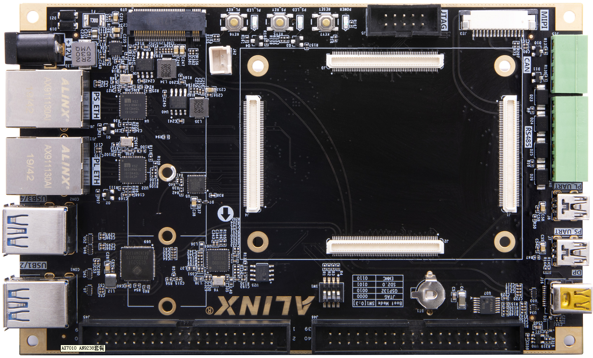2.2.1 简介¶
通过前面的功能简介,我们可以了解到扩展板部分的功能
1路M.2接口
1路DP输出接口
4路USB3.0接口
2路千兆以太网接口
2路USB Uart接口
1路Micro SD卡座
1路MIPI摄像头接口
2个40针扩展口
2路CAN通信接口
2路485通信接口
JTAG调试口
1路温度传感器
1路EEPROM
1路RTC实时时钟;
3个LED灯
3个按键
2.2.2 M.2接口¶
AXU3EG开发板配备了一个PCIE x1标准的M.2接口,用于连接M.2的SSD固态硬盘,通信速度高达6Gbps。M.2接口使用M key插槽,只支持PCI-E, 不支持SATA,用户选择SSD固态硬盘的时候需要选择PCIE类型的SSD固态硬盘。
PCIE信号直接跟ZU3EG的BANK505 PS MGT收发器相连接,1路TX信号和RX信号都是以差分信号方式连接到MGT的LANE1。PCIE的时钟有Si5332芯片提供,频率为100Mhz, M.2电路设计的示意图如下图3-2-1所示:
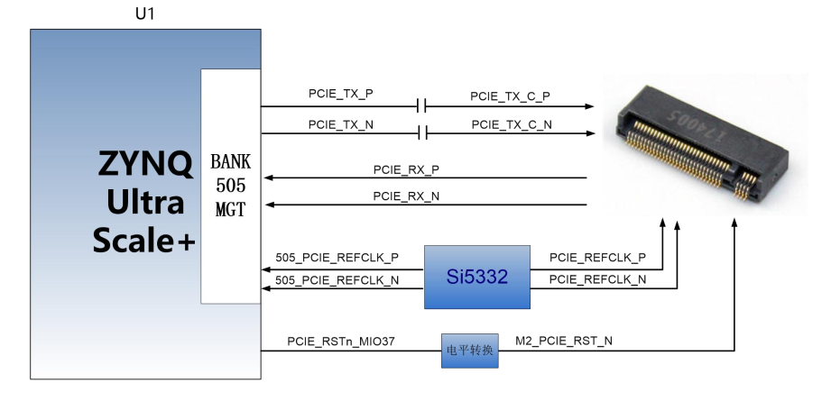3-2-1 M.2接口设计示意图
M.2接口ZYNQ引脚分配¶
信号名称 |
引脚名 |
引脚号 |
备注 |
|---|---|---|---|
PCIE_TX_P |
505_TX0_P |
E25 |
PCIE数据发送正 |
PCIE _TX_N |
505_TX0_N |
E26 |
PCIE数据发送负 |
PCIE _RX_P |
505_RX0_P |
F27 |
PCIE数据接收正 |
PCIE _RX_N |
505_RX0_N |
F28 |
PCIE数据接收负 |
505_PCIE_REFCLK_P |
505_CLK0_P |
F23 |
PCIE参考时钟正 |
505_PCIE_REFCLK_N |
505_CLK0_N |
F24 |
PCIE参考时钟负 |
PCIE_RSTn_MIO37 |
PS_MIO37_501 |
J17 |
PCIE复位信号 |
2.2.3 DP显示接口¶
AXU3EG开发板带有1路标准的DisplayPort输出显示接口,用于视频图像的显示。接口支持VESA DisplayPort V1.2a 输出标准,最高支持4K x 2K@30Fps输出,支持Y-only, YCbCr444, YCbCr422, YCbCr420和RGB视频格式,每种颜色支持6, 8, 10, 或者12位。
DisplayPort数据传输通道直接用ZU3EG的BANK505 PS MGT驱动输出,MGT的LANE2和LANE3 TX信号以差分信号方式连接到DP连接器。DisplayPort辅助通道连接到PS的MIO管脚上。DP输出接口设计的示意图如下图3-3-1所示:
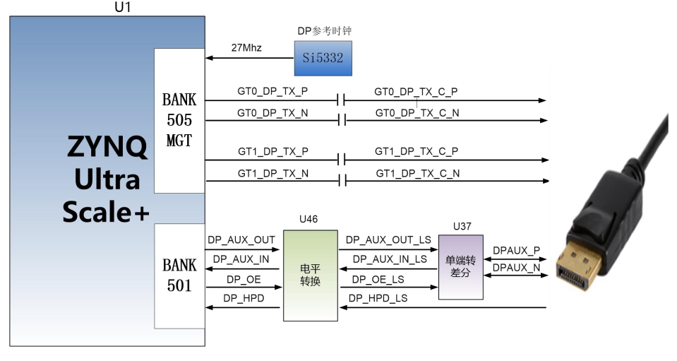3-3-1 DP接口设计示意图
DisplayPort接口ZYNQ引脚分配¶
信号名称 |
ZYNQ引脚名 |
ZYNQ引脚号 |
备注 |
|---|---|---|---|
GT0_DP_TX_P |
505_TX3_P |
B23 |
DP数据低位发送正 |
GT0_DP_TX_N |
505_TX3_N |
B24 |
DP数据低位发送负 |
GT1_DP_TX_P |
505_TX2_P |
C25 |
DP数据高位发送正 |
GT1_DP_TX_N |
505_TX2_N |
C26 |
DP数据高位发送负 |
505_CLK1_P |
505_CLK2_P |
C21 |
DP参考时钟正 |
505_CLK1_N |
505_CLK2_N |
C22 |
DP参考时钟负 |
DP_AUX_OUT |
PS_MIO27 |
J15 |
DP辅助数据输出 |
DP_AUX_IN |
PS_MIO30 |
F16 |
DP辅助数据输入 |
DP_OE |
PS_MIO29 |
G16 |
DP辅助数据输出使能 |
DP_HPD |
PS_MIO28 |
K15 |
DP插入信号检测 |
2.2.4 USB3.0接口¶
AXU3EG扩展板上有4个USB3.0接口,支持HOST工作模式,数据传输速度高达5.0Gb/s。USB3.0通过PIPE3接口连接,USB2.0通过ULPI接口连接外部的USB3320C芯片,实现高速的USB3.0和USB2.0的数据通信。
USB接口为扁型USB接口(USB Type A),方便用户同时连接不同的USB Slave外设(比如USB鼠标,键盘或U盘)。USB3.0连接的示意图如3-4-1所示:
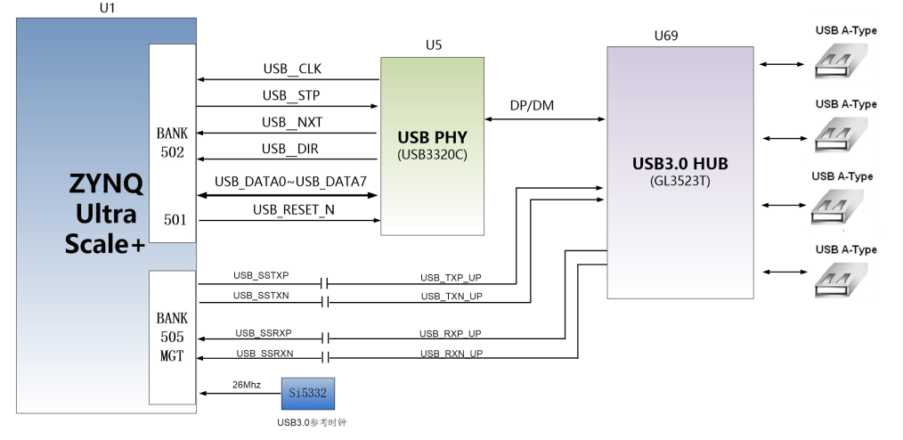3-4-1 USB3.0接口示意图
USB接口引脚分配¶
信号名称 |
引脚名 |
引脚号 |
备注 |
|---|---|---|---|
USB_SSTXP |
505_TX1_P |
D23 |
USB3.0数据发送正 |
USB_SSTXN |
505_TX1_N |
D24 |
USB3.0数据发送负 |
USB_SSRXP |
505_RX1_P |
D27 |
USB3.0数据接收正 |
USB_SSRXN |
505_RX1_N |
D28 |
USB3.0数据接收负 |
USB_DATA0 |
PS_MIO56 |
C16 |
USB2.0数据Bit0 |
USB_DATA1 |
PS_MIO57 |
A16 |
USB2.0数据Bit1 |
USB_DATA2 |
PS_MIO54 |
F17 |
USB2.0数据Bit2 |
USB_DATA3 |
PS_MIO59 |
E17 |
USB2.0数据Bit3 |
USB_DATA4 |
PS_MIO60 |
C17 |
USB2.0数据Bit4 |
USB_DATA5 |
PS_MIO61 |
D17 |
USB2.0数据Bit5 |
USB_DATA6 |
PS_MIO62 |
A17 |
USB2.0数据Bit6 |
USB_DATA7 |
PS_MIO63 |
E18 |
USB2.0数据Bit7 |
USB_STP |
PS_MIO58 |
F18 |
USB2.0停止信号 |
USB_DIR |
PS_MIO53 |
D16 |
USB2.0数据方向信号 |
USB_CLK |
PS_MIO52 |
G18 |
USB2.0时钟信号 |
USB_NXT |
PS_MIO55 |
B16 |
USB2.0下一数据信号 |
USB_RESET_N |
PS_MIO31 |
H16 |
USB2.0复位信号 |
2.2.5千兆以太网接口¶
AXU3EG扩展板上有2路千兆以太网接口,1路连接到PS端,另1路连接到PL端。GPHY芯片采用Micrel公司的KSZ9031RNX以太网PHY芯片为用户提供网络通信服务。KSZ9031RNX芯片支持10/100/1000 Mbps网络传输速率,通过RGMII接口跟ZU3EG系统的MAC层进行数据通信。KSZ9031RNX支持ＭDI/MDX自适应,各种速度自适应,Master/Slave自适应,支持MDIO总线进行PHY的寄存器管理。
KSZ9031RNX上电会检测一些特定的IO的电平状态,从而确定自己的工作模式。表3-5-1 描述了GPHY芯片上电之后的默认设定信息。
配置Pin脚 |
说明 |
配置值 |
|---|---|---|
PHYAD[2:0] |
MDIO/MDC 模式的PHY地址 |
PHY Address 为 011 |
CLK125_EN |
使能125Mhz时钟输出选择 |
使能 |
LED_MODE |
LED灯模式配置 |
单个LED灯模式 |
MODE0~MODE3 |
链路自适应和全双工配置 |
10/100/1000自适应,兼容全双工、半双工 |
表3-5-1PHY芯片默认配置值
当网络连接到千兆以太网时,ZYNQ和PHY芯片KSZ9031RNX的数据传输时通过RGMII总线通信,传输时钟为125Mhz,数据在时钟的上升沿和下降样采样。
当网络连接到百兆以太网时,ZYNQ和PHY芯片KSZ9031RNX的数据传输时通过RMII总线通信,传输时钟为25Mhz。数据在时钟的上升沿和下降样采样。
图3-5-1为ZYNQ以太网PHY芯片连接示意图:
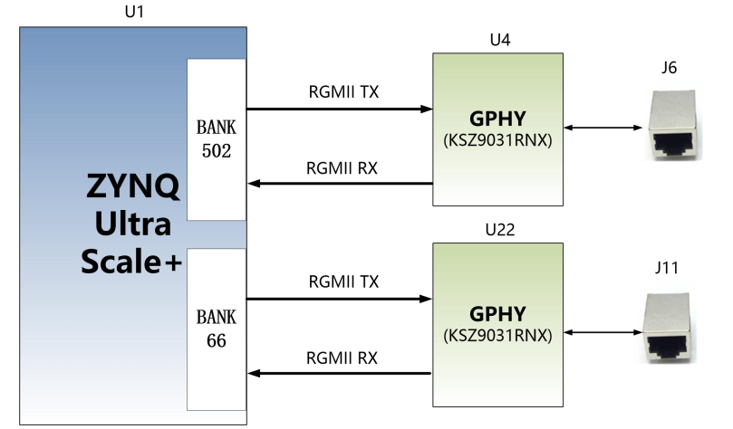图3-6-1 ZYNQ与GPHY连接示意图
千兆以太网引脚分配¶
信号名称 |
引脚名 |
引脚号 |
备注 |
|---|---|---|---|
PHY1_TXCK |
PS_MIO64 |
E19 |
以太网1RGMII 发送时钟 |
PHY1_TXD0 |
PS_MIO65 |
A18 |
以太网1发送数据bit0 |
PHY1_TXD1 |
PS_MIO66 |
G19 |
以太网1发送数据bit1 |
PHY1_TXD2 |
PS_MIO67 |
B18 |
以太网1发送数据bit2 |
PHY1_TXD3 |
PS_MIO68 |
C18 |
以太网1发送数据bit3 |
PHY1_TXCTL |
PS_MIO69 |
D19 |
以太网1发送使能信号 |
PHY1_RXCK |
PS_MIO70 |
C19 |
以太网1RGMII接收时钟 |
PHY1_RXD0 |
PS_MIO71 |
B19 |
以太网1接收数据Bit0 |
PHY1_RXD1 |
PS_MIO72 |
G20 |
以太网1接收数据Bit1 |
PHY1_RXD2 |
PS_MIO73 |
G21 |
以太网1接收数据Bit2 |
PHY1_RXD3 |
PS_MIO74 |
D20 |
以太网1接收数据Bit3 |
PHY1_RXCTL |
PS_MIO75 |
A19 |
以太网1接收数据有效信号 |
PHY1_MDC |
PS_MIO76 |
B20 |
以太网1MDIO管理时钟 |
PHY1_MDIO |
PS_MIO77 |
F20 |
以太网1MDIO管理数据 |
PHY2_TXCK |
B66_L17_N |
E8 |
以太网2 RGMII 发送时钟 |
PHY2_TXD0 |
B66_L18_P |
E9 |
以太网2发送数据bit0 |
PHY2_TXD1 |
B66_L18_N |
D9 |
以太网2发送数据bit1 |
PHY2_TXD2 |
B66_L23_P |
A9 |
以太网2发送数据bit2 |
PHY2_TXD3 |
B66_L23_N |
A8 |
以太网2发送数据bit3 |
PHY2_TXCTL |
B66_L24_N |
B9 |
以太网2发送使能信号 |
PHY2_RXCK |
B66_L14_P |
E5 |
以太网2 RGMII接收时钟 |
PHY2_RXD0 |
B66_L19_N |
A5 |
以太网2接收数据Bit0 |
PHY2_RXD1 |
B66_L19_P |
B5 |
以太网2接收数据Bit1 |
PHY2_RXD2 |
B66_L17_P |
F8 |
以太网2接收数据Bit2 |
PHY2_RXD3 |
B66_L24_P |
C9 |
以太网2接收数据Bit3 |
PHY2_RXCTL |
B66_L22_N |
B8 |
以太网2接收数据有效信号 |
PHY2_MDC |
B66_L21_N |
A6 |
以太网2 MDIO管理时钟 |
PHY2_MDIO |
B66_L22_P |
C8 |
以太网2 MDIO管理数据 |
PHY2_RESET |
B66_L14_N |
D5 |
以太网2复位信号 |
2.2.6USB Uart接口¶
AXU3EG扩展板上配备了2个Uart转USB接口,1个连接到PS端,一个连接到PL端。转换芯片采用Silicon Labs CP2102GM的USB-UAR芯片, USB接口采用MINI USB接口,可以用USB线将它连接到上PC的USB口进行串口数据通信。USB Uart电路设计的示意图如下图所示:
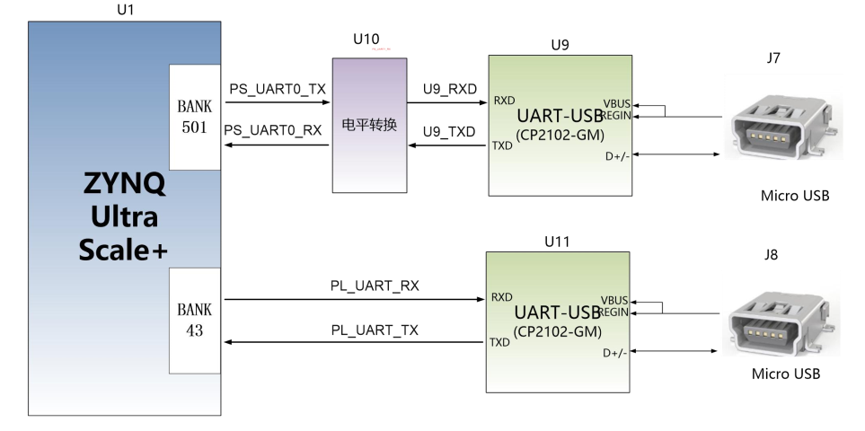3-6-1 USB转串口示意图
USB转串口的ZYNQ引脚分配¶
信号名称 |
引脚名 |
引脚号 |
备注 |
|---|---|---|---|
PS_UART0_TX |
PS_MIO43 |
K19 |
PS Uart数据输出 |
PS_UART0_RX |
PS_MIO42 |
L18 |
PS Uart数据输入 |
PL_UART_TX |
B43_L3_P |
AH12 |
PL Uart数据输出 |
PL_UART_RX |
B43_L3_N |
AH11 |
PL Uart数据输入 |
2.2.7 SD卡槽¶
AXU3EG扩展板包含了一个Micro型的SD卡接口,以提供用户访问SD卡存储器,用于存储ZU3EG芯片的BOOT程序,Linux操作系统内核, 文件系统以及其它的用户数据文件。
SDIO信号与ZU3EG的PS BANK501的IO信号相连,因为501的VCCIO设置为1.8V,但SD卡的数据电平为3.3V, 我们这里通过TXS02612电平转换器来连接。
ZU3EG PS和SD卡连接器的原理图如图3-7-1所示。
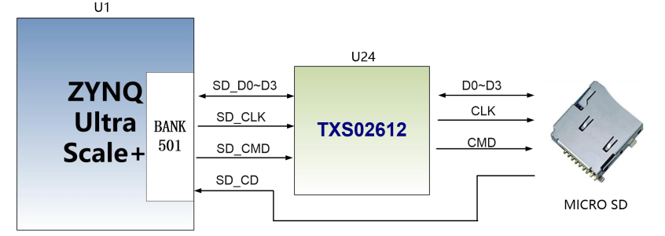图3-7-1 SD卡连接示意图
SD卡槽引脚分配¶
信号名称 |
引脚名 |
引脚号 |
备注 |
|---|---|---|---|
SD_CLK |
PS_MIO51 |
l21 |
SD时钟信号 |
SD_CMD |
PS_MIO50 |
M19 |
SD命令信号 |
SD_D0 |
PS_MIO46 |
L20 |
SD数据Data0 |
SD_D1 |
PS_MIO47 |
H21 |
SD数据Data1 |
SD_D2 |
PS_MIO48 |
J21 |
SD数据Data2 |
SD_D3 |
PS_MIO49 |
M18 |
SD数据Data3 |
SD_CD |
PS_MIO45 |
K20 |
SD卡检测信号 |
2.2.8 40针扩展口¶
AXU3EG扩展板预留了2个2.54mm标准间距的40针的扩展口J45和J46,用于连接黑金的各个模块或者用户自己设计的外面电路,扩展口有40个信号,其中,5V电源1路,3.3V电源2路,地3路,IO口34路。扩展口的IO连接的ZYNQ芯片BANK44,24,25,26的IO上,电平标准为3.3V。
J45扩展口ZYNQ的引脚分配¶
J45管脚 |
信号名称” |
引脚号 |
J17管脚 |
信号名称” |
引脚号 |
|---|---|---|---|---|---|
1 |
GND |
— |
2 |
+5V |
— |
3 |
B45_L9_N |
B10 |
4 |
B45_L9_P |
C11 |
5 |
B45_L5_N |
F10 |
6 |
B45_L5_P |
G11 |
7 |
B45_L12_N |
C12 |
8 |
B45_L12_P |
D12 |
9 |
B45_L11_N |
A11 |
10 |
B45_L11_P |
A12 |
11 |
B45_L6_N |
F11 |
12 |
B45_L6_P |
F12 |
13 |
B46_L6_N |
E13 |
14 |
B46_L6_P |
E14 |
15 |
B46_L3_N |
A13 |
16 |
B46_L3_P |
B13 |
17 |
B46_L2_N |
A14 |
18 |
B46_L2_P |
B14 |
19 |
B46_L4_N |
C13 |
20 |
B46_L4_P |
C14 |
21 |
B46_L12_N |
L13 |
22 |
B46_L12_P |
L14 |
23 |
B45_L4_N |
H12 |
24 |
B45_L4_P |
J12 |
25 |
B46_L11_N |
J14 |
26 |
B46_L11_P |
K14 |
27 |
B46_L10_N |
H13 |
28 |
B46_L10_P |
H14 |
29 |
B46_L7_N |
F13 |
30 |
B46_L7_P |
G13 |
31 |
B46_L9_N |
G14 |
32 |
B46_L9_P |
G15 |
33 |
B46_L5_N |
D14 |
34 |
B46_L5_P |
D15 |
35 |
B46_L1_N |
A15 |
36 |
B46_L1_P |
B15 |
37 |
GND |
— |
38 |
GND |
— |
39 |
+3.3V |
— |
40 |
+3.3V |
— |
J46扩展口ZYNQ的引脚分配¶
J46管脚 |
信号名称” |
引脚号 |
J13管脚 |
信号名称” |
引脚号 |
|---|---|---|---|---|---|
1 |
GND |
— |
2 |
+5V |
— |
3 |
B43_L2_N |
AG11 |
4 |
IO2_1P |
Y14 |
5 |
B44_L8_N |
AB14 |
6 |
IO2_2P |
AA13 |
7 |
B44_L9_N |
W13 |
8 |
IO2_3P |
AC12 |
9 |
B44_L11_N |
W11 |
10 |
IO2_4P |
AD11 |
11 |
B43_L10_N |
Y10 |
12 |
IO2_5P |
AB11 |
13 |
B43_L12_N |
AB9 |
14 |
IO2_6P |
AG14 |
15 |
B44_L3_N |
AH13 |
16 |
IO2_7P |
AC14 |
17 |
B44_L12_N |
AA12 |
18 |
IO2_8P |
AD15 |
19 |
B44_L1_N |
AE14 |
20 |
IO2_9P |
AH12 |
21 |
B44_L5_N |
AD14 |
22 |
IO2_10P |
AA11 |
23 |
B44_L6_N |
AC13 |
24 |
IO2_11P |
Y9 |
25 |
B44_L10_N |
Y13 |
26 |
IO2_12P |
AE10 |
27 |
B44_L2_N |
AH14 |
28 |
IO2_13P |
AE12 |
29 |
B43_L8_N |
AC11 |
30 |
IO2_14P |
AG10 |
31 |
B43_L7_N |
AD10 |
32 |
IO2_15P |
AF11 |
33 |
B43_L6_N |
AD12 |
34 |
IO2_16P |
W10 |
35 |
B44_L7_N |
AB13 |
36 |
IO2_17P |
AB10 |
37 |
GND |
— |
38 |
GND |
— |
39 |
+3.3V |
— |
40 |
+3.3V |
— |
2.2.9 CAN通信接口¶
AXU3EG扩展板上有2路CAN通信接口,连接在PS系统端BANK501的MIO接口上。CAN收发芯片选用了TI公司的SN65HVD232C芯片为用户CAN通信服务。
图3-9-1为PS端CAN收发芯片的连接示意图
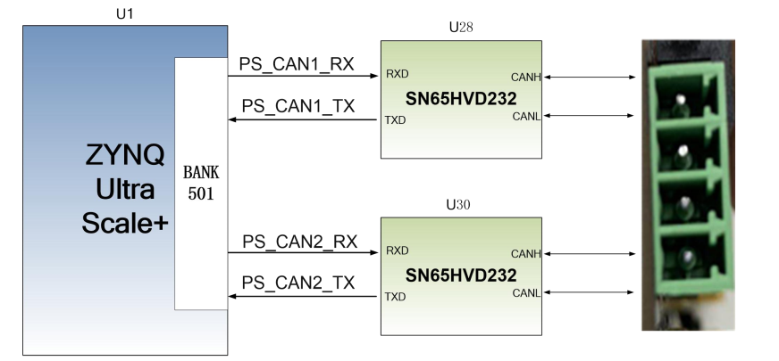图3-10-1 PS端CAN收发芯片的连接示意图
CAN通信引脚分配¶
信号名称 |
引脚名 |
引脚号 |
备注 |
|---|---|---|---|
PS_CAN1_TX |
PS_MIO32 |
J16 |
CAN1 发送端 |
PS_CAN1_RX |
PS_MIO33 |
L16 |
CAN1 接收端 |
PS_CAN2_TX |
PS_MIO39 |
H19 |
CAN2 发送端 |
PS_CAN2_RX |
PS_MIO38 |
H18 |
CAN2 接收端 |
2.2.10 485通信接口¶
AXU3EG扩展板上有2路485通信接口, 485通信端口连接在PL端BANK43~45的IO接口上。485收发芯片选用MAXIM公司的MAX3485芯片为用户485通信服务。
图3-11-1为PL端485收发芯片的连接示意图
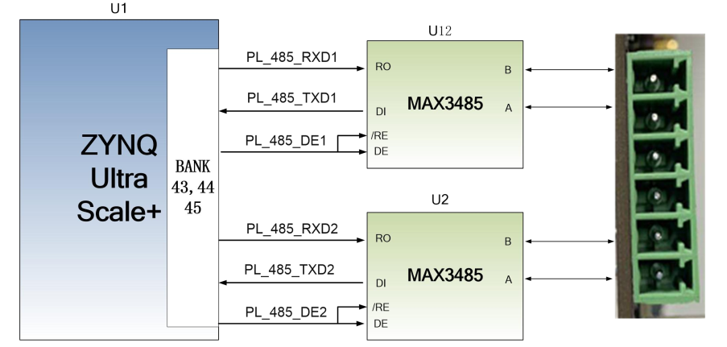图3-11-1 PL端485通信的连接示意图
RS485通信引脚分配¶
信号名称 |
引脚名 |
引脚号 |
备注 |
|---|---|---|---|
PL_485_TXD1 |
B43_L1_N |
AH10 |
第一路485发送端 |
PL_485_RXD1 |
B44_L4_P |
AE13 |
第一路485接收端 |
PL_485_DE1 |
B45_L10_P |
B11 |
第一路485发送使能 |
PL_485_TXD2 |
B43_L1_N |
AG10 |
第二路485发送端 |
PL_485_RXD2 |
B44_L4_N |
AF13 |
第二路485接收端 |
PL_485_DE2 |
B45_L10_N |
A10 |
第二路485发送使能 |
2.2.11 MIPI接口¶
底板上包含了一个MIPI摄像头接口,可以用来接我们的MIPI OV5640像头模块(AN5641)。MIPI接口15PIN的FPC连接器,为2个LANE的数据和1对时钟,连接到BANK65的差分IO管脚上,电平标准为1.2V;其它的控制信号连接到BANK43的IO上,电平标准为3.3V。
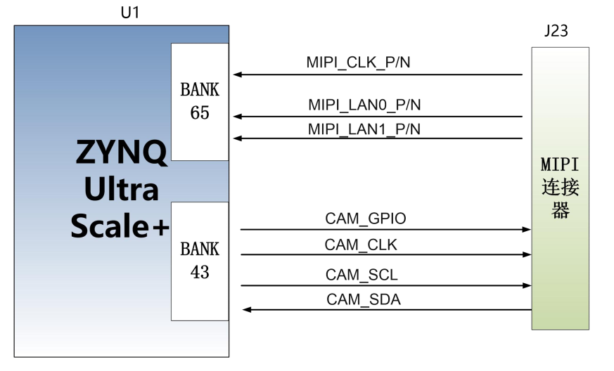图3-11-1 HDMI接口设计原理图
MIPI接口引脚分配¶
信号名称 |
ZYNQ引脚名 |
ZYNQ引脚号 |
备注 |
|---|---|---|---|
MIPI_CLK_P |
B65_L1_P |
W8 |
MIPI输入时钟正 |
MIPI_CLK_N |
B65_L1_N |
Y8 |
MIPI输入时钟负 |
MIPI_LAN0_P |
B65_L2_P |
U9 |
MIPI输入的数据LANE0正 |
MIPI_LAN0_N |
B65_L2_N |
V9 |
MIPI输入的数据LANE0负 |
MIPI_LAN1_P |
B65_L3_P |
U8 |
MIPI输入的数据LANE1正 |
MIPI_LAN1_N |
B65_L3_N |
V8 |
MIPI输入的数据LANE1负 |
CAM_GPIO |
B43_L4_P |
AE10 |
摄像头的GPIO控制 |
CAM_CLK |
B43_L4_N |
AF10 |
摄像头的时钟输入 |
CAM_SCL |
B43_L11_P |
Y9 |
摄像头的I2C时钟 |
CAM_SDA |
B43_L11_N |
AA8 |
摄像头的I2C数据 |
2.2.12JTAG调试口¶
在AXU3EG扩展板上预留了一个JTAG接口,用于下载ZYNQ UltraScale+程序或者固化程序到FLASH。为了带电插拔造成对ZYNQ UltraScale+芯片的损坏,我们在JTAG信号上添加了保护二极管来保证信号的电压在FPGA接受的范围,避免ZYNQ UltraScale+芯片的损坏。
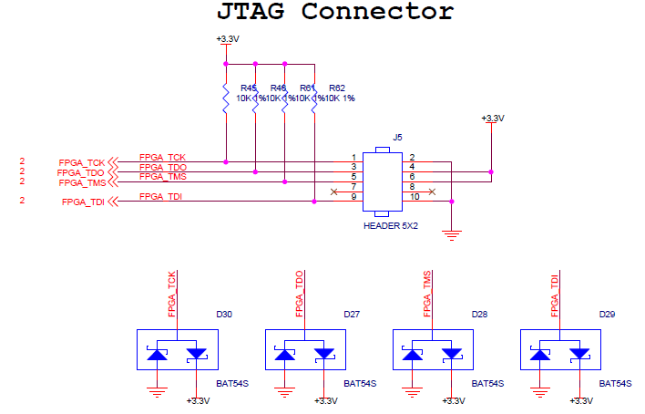图3-12-1 原理图中JTAG接口部分
2.2.13RTC实时时¶
ZU3EG芯片内部带有RTC实时时钟的功能,有年月日时分秒还有星期计时功能。外部需要接一个32.768KHz的无源时钟,提供精确的时钟源给内部时钟电路,这样才能让RTC可以准确的提供时钟信息。同时为了产品掉电以后,实时时钟还可以正常运行,一般需要另外配一个电池给时钟芯片供电。开发板上的BT1为1.5V的纽扣电池(型号LR1130,电压为1.5V),当系统掉电池,纽扣电池还可以给RTC系统供电,可以提供持续不断的时间信息。图3-12-1为RTC实时时钟原理图
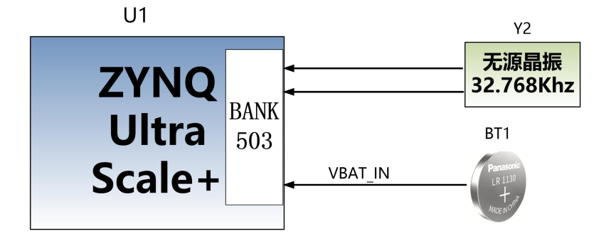图3-13-1为RTC实时时钟原理图
2.2.14 EEPROM和温度传感器¶
AXU3EG开发板板载了一片EEPROM,型号为24LC04,容量为:4Kbit(2*256*8bit),通过IIC总线连接到PS端进行通信。另外板上还带有一个高精度、低功耗、数字温度传感器芯片,型号为ON Semiconductor公司的LM75,LM75芯片的温度精度为0.5度。EEPROM和温度传感器通过I2C总线挂载到ZYNQ UltraScale+的Bank500 MIO上。图3-14-1为EEPROM和温度传感器的原理图
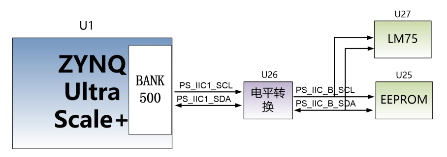图3-14-1 EEPROM和传感器的原理图
EEPROM通信引脚分配¶
信号名称 |
引脚名 |
引脚号 |
备注 |
|---|---|---|---|
PS_IIC1_SCL |
PS_MIO24 |
AB19 |
I2C时钟信号 |
PS_IIC1_SDA |
PS_MIO25 |
AB21 |
I2C数据信号 |
2.2.15 LED灯¶
AXU3EG扩展板上有3个发光二极管LED。 包含1个电源指示灯, 1个PS控制指示灯,1个PL控制指示灯。用户可以通过程序来控制亮和灭,当连接用户LED灯的IO电压为低时,用户LED灯熄灭,当连接IO电压为高时,用户LED会被点亮。用户LED灯硬件连接的示意图如图3-15-1所示:
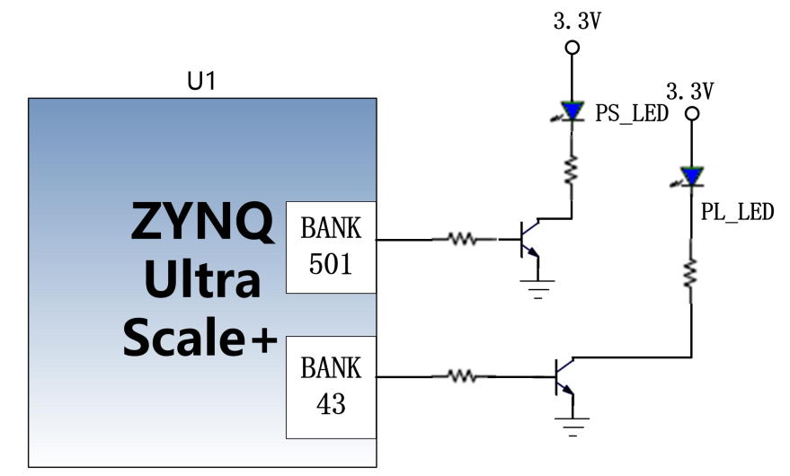图3-15-1用户LED灯硬件连接示意图
用户LED灯的引脚分配¶
信号名称 |
引脚名 |
引脚号 |
备注 |
|---|---|---|---|
PS_LED1 |
PS_MIO40 |
K18 |
用户PS LED灯 |
PL_LED1 |
B43_L5_P |
AE12 |
用户PL LED灯 |
2.2.16 按键¶
AXU3EG扩展板上有1个复位按键RESET和2个用户按键。复位信号连接到核心板的复位芯片输入,用户可以使用这个复位按键来复位ZYNQ系统。用户按键1个连接到PS的MIO上,1个是连接到PL的IO上。复位按键和用户按键都是低电平有效,用户按键的连接示意图如图3-16-1所示:
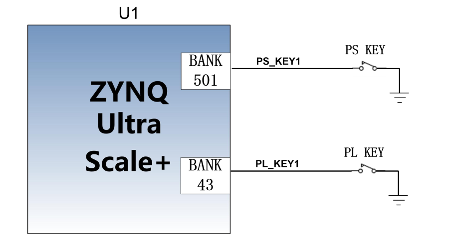图3-16-1 复位按键连接示意图
按键的ZYNQ管脚分配¶
信号名称 |
引脚名 |
引脚号 |
备注 |
|---|---|---|---|
PS_KEY1 |
PS_MIO26 |
L15 |
PS按键1输入 |
PL_KEY1 |
B43_L5_N |
AF12 |
PL按键1输入 |
2.2.17 拨码开关配置¶
开发板上有一个4位的拨码开关SW1用来配置ZYNQ系统的启动模式。AXU3EG系统开发平台支持4种启动模式。这4种启动模式分别是JTAG调试模式, QSPI FLASH, EMMC和SD2.0卡启动模式。ZU3EG芯片上电后会检测(PS_MODE0~3)的电平来决定那种启动模式。用户可以通过扩展板上的拨码开关SW1来选择不同的启动模式。SW1启动模式配置如下表3-17-1所示。
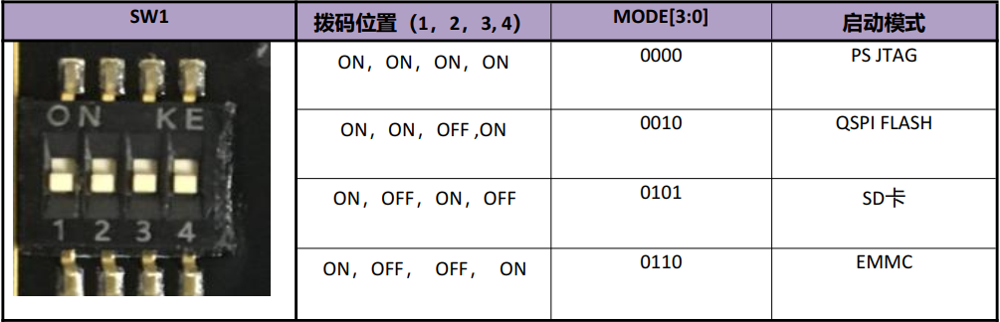表3-17-1 SW1启动模式配置
2.2.18 电源¶
AXU3EG开发板的电源输入电压为DC12V。底板上通过1路DC/DC电源芯片TPS54620和2路DC/DC电源芯片MP1482转换成+5V,+3.3V,+1.8V。另外底板通过LDO产生+1.2V给核心板BANK65供电, BANK66的供电为+1.8V。板上的电源设计示意图如下图3-18-1所示:
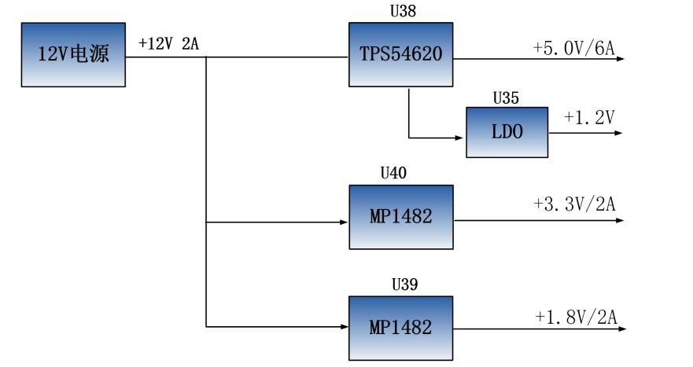图3-18-1原理图中电源接口部分
各个电源分配的功能¶
电源 |
功能 |
|---|---|
+5.0V |
USB供电电源 |
+1.8V |
以太网,USB2.0,核心板BANK66 |
+3.3V |
以太网,USB2.0,SD,DP,CAN,RS485 |
+1.2V |
核心板BANK65 |
2.2.19 风扇¶
因为ZU3EG正常工作时会产生大量的热量,我们在板上为芯片增加了一个散热片和风扇,防止芯片过热。风扇的控制由ZYNQ芯片来控制,控制管脚连接到BANK43的IO上(AA11),如果IO电平输出为低,MOSFET管导通,风扇工作,如果IO电平输出为高,风扇停止。板上的风扇设计图如下图3-19-1所示:
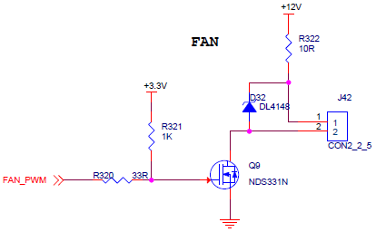图3-19-1 开发板原理图中风扇设计
风扇出厂前已经用螺丝固定在开发板上,风扇的电源连接到了J42的插座上,红色的为正极,黑色的为负极。
2.2.20 结构尺寸图¶
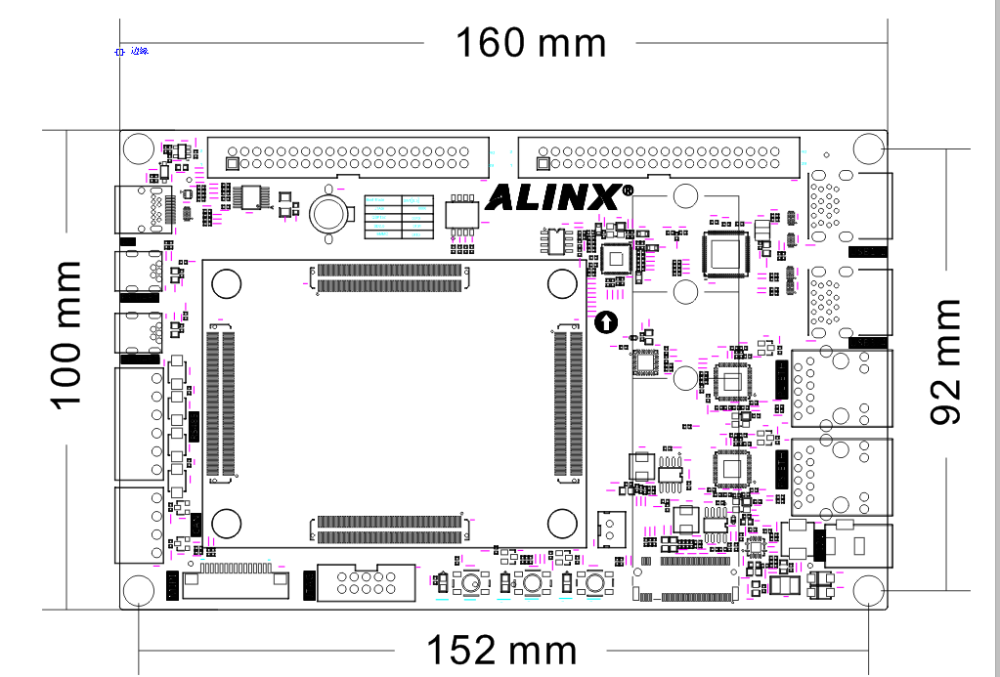图3-20-1正面图(Top View)

ZYNQ MPSoC开发平台 FPGA教程 - Alinx官方网站